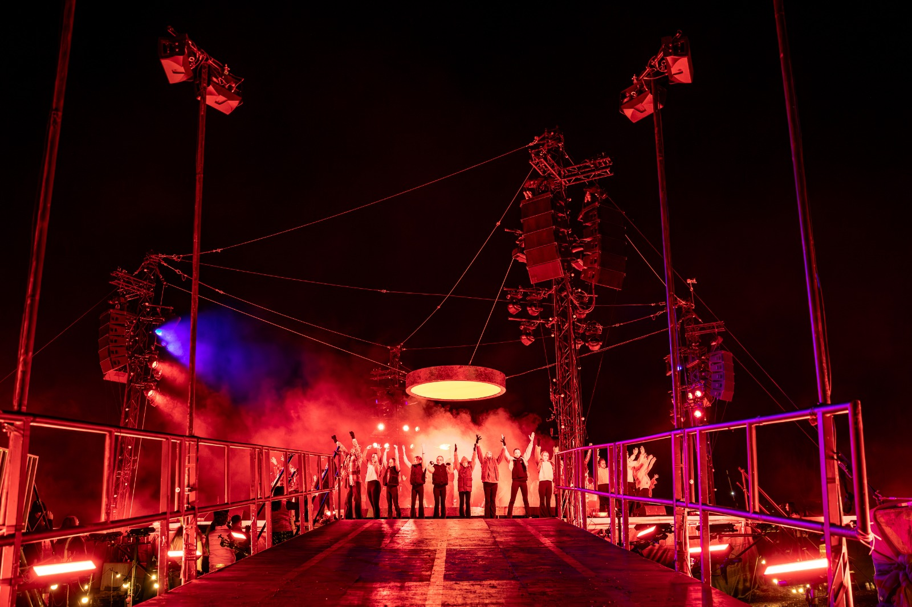
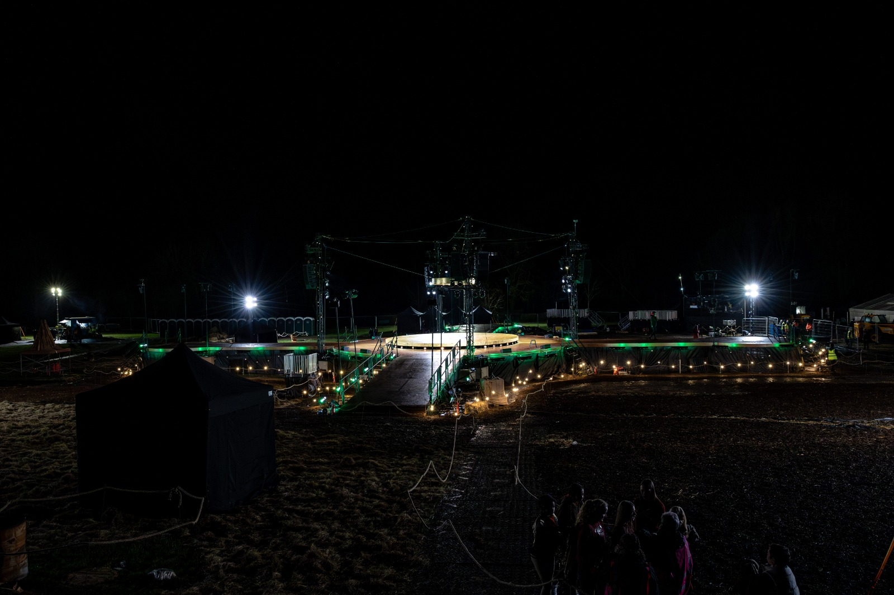
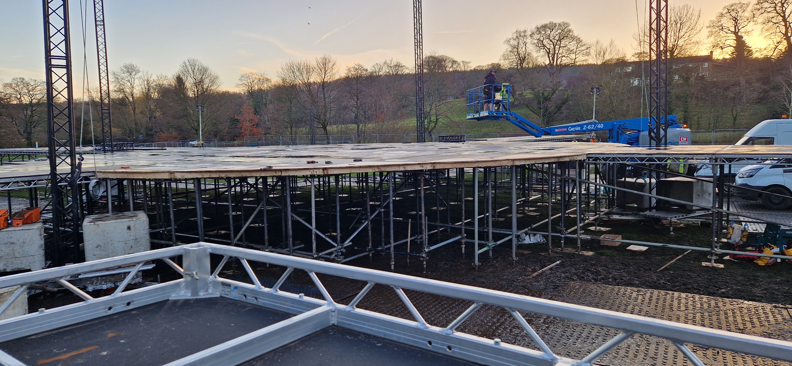
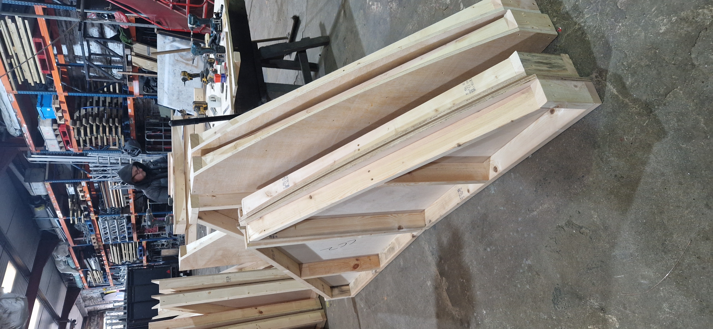
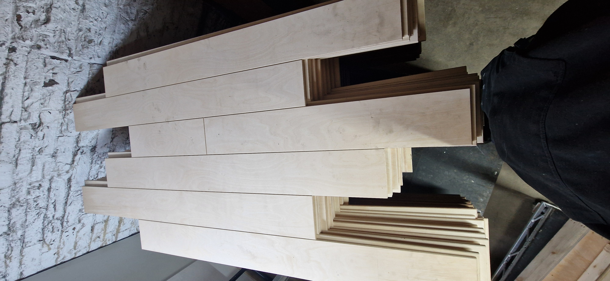
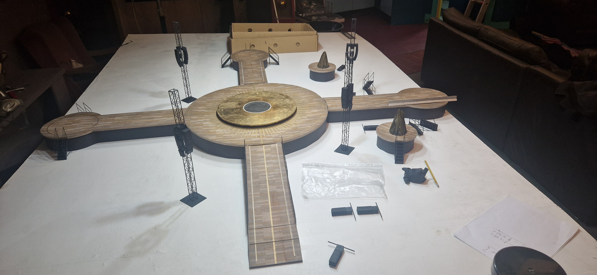

Brighter Still was the closing ceremony of Bradford 2025. Raven Staging was commissioned to deliver the performance structure — a 40m² circular outdoor stage built to host over 200 performers, completed in winter conditions to a fixed show deadline.
The platform was built using over 150 Litedeck panels at 1.8m, with three extending runways and a north ramp. Bespoke curved infills completed the circular stage edge. The show floor was inherited from the Railway Children production — we were asked to repurpose the panels, but needed double the quantity. Bare Joinery in Leeds CNC-cut matching panels to specification; both sets were then scenic-painted and aged to match before gold detailing was hand-applied across the full surface.
Additional infrastructure included FOH, AVP, festoon, gazebos, and site support structures.





Working on something similar?
Start a Conversation